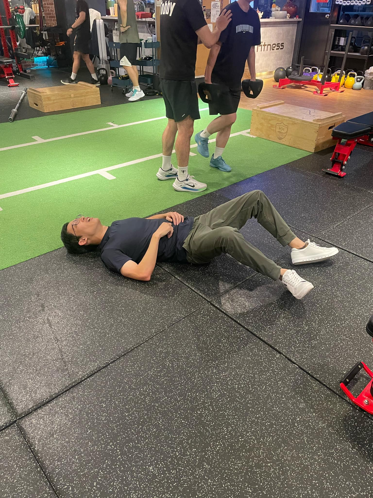

治療+訓練
治療+訓練
臨床這幾年下來發現，治療肌肉筋膜骨骼類疼痛可以分成前端的治療與治療後的訓練，特別是針對現代人長時間久坐久站造成肌力失能、體態失衡，以及高齡化老年人的肌力流失，在疼痛治療後，持續的訓練更是不可忽略的一環。我在診間治療後也都會衛教一些簡單的訓練動作，讓患者回家練習，盡可能地減少疼痛復發的可能，讓治療能有更好的效益。
回歸訓練已經2-3年多，體態、體型也都比以前的自己進步許多，體重也持續朝著目標60kg前進🎯
診間遇到肌力不足的長輩，也會轉介給我的教練，幫忙訓練基礎肌耐力，長輩回診的回饋也都很好，日常這裡痛那裡痛的症頭也都消失了！
「治療+訓練」不僅處理了疼痛，也顯著地改善了生活品質。
很感謝我的教練Henry適時適度的訓練，讓我現在的體態與肌耐力有非常大的進步(雖然我每次練完都很想揍他)；也很開心能用我的專業幫助我的教練解決了長年臀腿麻的問題，跨專業間的合作也是全人醫療的一個重要環節，建立良性的互助合作，1+1永遠都能大於2 ！
很榮幸能透過自己的專業幫忙處理疼痛，也很高興透過自己的訓練體驗與改變，讓更多人體驗日常訓練的重要。
#每次練完大概就是這模樣
#治療加訓練的全人醫療
太初中醫診所
中醫師 黃彥鈞
New Fitness 新動力
@henryathletetraining （IG)
